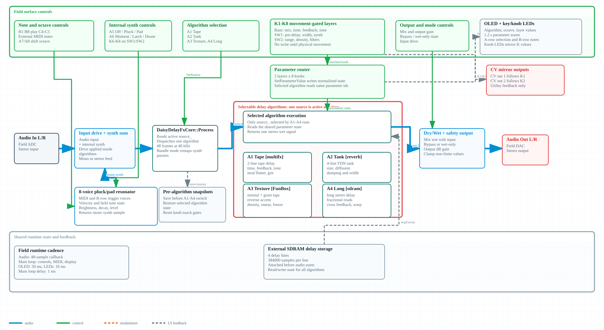
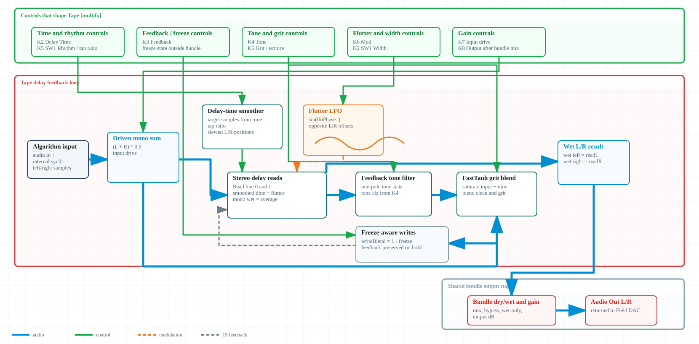
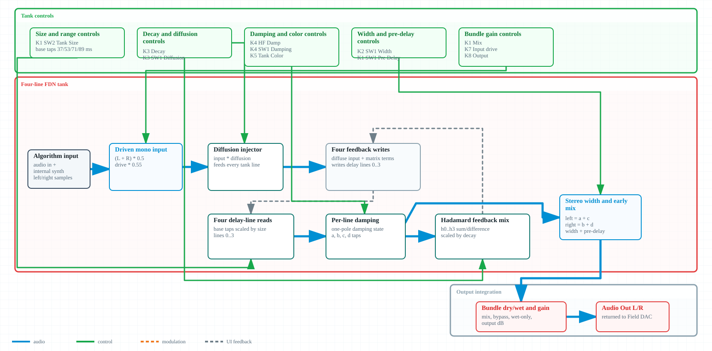
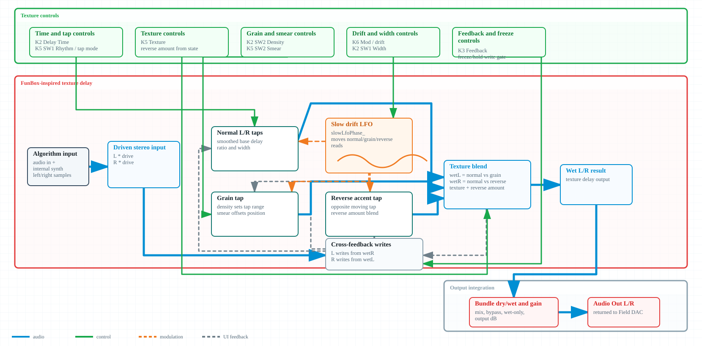
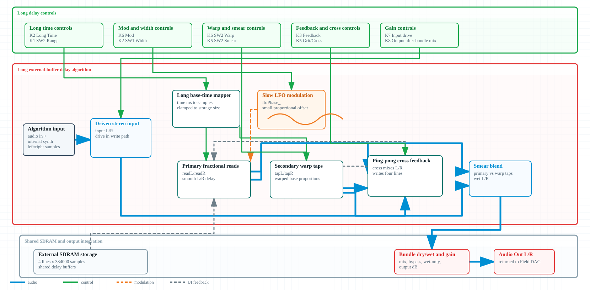

Field_Template_June Controls Dashboard
Dedicated report for the new Daisy Field template with until-touched controls, capped visual refresh, build/QAE evidence, and comparison against Field_Template_April and Field_delay_bundle.
Overview
make completed for Field_Template_June.
make program, not manual DFU.
What Changed
June replaces near-value pickup with movement-gated until-touched control. Each active bank or hidden modifier records raw knob positions at entry, protects stored values, and attaches only when the knob moves.
April Baseline
April is still the clean source baseline: external-MIDI mono synth, main/alt banked knobs, hidden output level, tri-state key LEDs, and OLED overview/zoom.
Delay Reference
Field_delay_bundle supplied the strongest runtime pattern: movement-gated layers, 50 ms OLED cadence, 16 ms LED cadence, and bounded MIDI event processing.
Architecture
Current June firmware has two separate structures: a software runtime that owns control sampling, state handoff, display, LEDs, MIDI, and serial commands; and a mono synth voice that turns the stored state into audio inside the 48-sample callback.
Comprehensible Block Diagram
The synth view is hand-routed rather than auto-laid out: blue cables are audio, green cables are UI controls, orange dashed cables are modulation, and gray dashed cables are UI feedback. Controls are attached directly to the sound-processing unit they affect.
Software Architecture Flowchart
Main-loop ownership is separated from audio ownership. The diagram emphasizes rates, handoff state, and what is intentionally kept out of the audio callback.
Init, startup OLED, StartAdc, PrimeControls, MIDI init, then StartAudio.kMainLoopDelayMs = 1, MIDI cap 16.0.012, write deadband 0.0005.Synth Signal Path Flowchart
This view follows the audio path from notes and mapped UI parameters through generators, modulators, filter, envelope, drive, and output level.
Color.Wave/Color; key LEDs show selected wave; K8 LED shows stored Color.Sub.Sub when Alt bank is active.Noise.Noise.Attack, Decay, Sustain, Release.LfoRt, K3 controls LfoDp. A7 cycles Off, Pitch, Filter.Cutoff, K2 Main Reso, K1 Alt EnvAmt, A6 KeyTrack, A7 Filter target.VelAmt. K7 Main controls Drive. Hold SW2 and move K8 for hidden Level.GoJS Interactive Architecture Explorer
Source-grounded relationship graph for June runtime ownership.
Delay Bundle Reference
Field_delay_bundle is the richest Field-family reference in this dashboard because it combines the Field control surface, movement-gated parameter layers, internal note sources, external MIDI, SDRAM delay memory, and four selectable delay algorithms. These diagrams separate the reusable runtime/control idea from the DSP topology inside each algorithm.
What The Overview Shows
The all-in-one view shows the shared execution shell: input drive and internal synth mix feed DaisyDelayFxCore::Process, one selected algorithm runs per audio block, and the Field surface writes normalized state through movement-gated control layers.
What The Detail Sheets Add
The algorithm sheets expand A1-A4 into actual delay structures: tape lines and flutter, FDN reverb tank, texture/grain tap handling, and long SDRAM stereo delay with fractional reads and cross feedback.
Original All-In-One Bundle Diagram
Shared audio/control structure for Field_delay_bundle: Field controls, MIDI/B-row notes, parameter router, internal pluck/pad voice, selected algorithm execution, SDRAM storage, dry/wet safety output, OLED/LED feedback, and CV mirrors.

A1 Tape [multifx]
Two shared tape-delay lines with per-channel time targets, fractional interpolation, feedback return, one-pole tone filtering, flutter modulation, freeze-aware write gating, and FastTanh grit before wet/dry output.

A2 Tank [reverb]
Four delay lines form a small feedback-delay network. Input diffusion feeds the tank, Hadamard-style mixing redistributes energy, damping and diffusion shape decay density, and width mixes the stereo wet return.

A3 Texture [FunBox]
Texture mode fans the same input into normal taps, grain taps, and reverse/accent taps. Slow drift and density smear the read positions, feedback returns through the texture blend, and freeze can hold the write head.

A4 Long [sdram]
Long mode uses external SDRAM as the main musical delay store. It derives primary, secondary, and warp read taps from a smoothed time target, cross-feeds stereo feedback, filters the return, and optionally freezes writes.

Phantasmagoria Delay Review
Source-verified literature review comparing the atmospheric spectral delay and echo chamber algorithms from FuzzyLotus/Phantasmagoria to the Daisy Field delay bundle modes.
Equivalence Matrix
Mapping of Phantasmagoria extracted algorithms to the closest Field delay bundle families and potential reuse priority.
Candidate Algorithms
Individual delay-related DSP blocks extracted from Phantasmagoria source code.
Synthesis Themes
Gaps & Limitations
QAE Recommendations
Timing Analysis
The important design point is not that every task runs faster. It is that every task runs at a rate matched to its job: controls at 1 ms, LEDs at human-visible refresh, and OLED at a capped dirty redraw rate.
June Timing Logic Lanes
48 samples (block)
1 ms paced
16 ms capped
50 ms capped
Mermaid Timing Sequence
Responsiveness
Until-Touched State Machine
What This Means On K1
Plain K1 writes Cutoff only while the main bank is active and after K1 has moved from the main-bank entry anchor. Tapping SW1 toggles the Alt bank; when Alt is active, K1 writes EnvAmt and cannot overwrite stored Cutoff.
- No need to hunt for the old stored value.
- No immediate jump when changing bank or modifier.
- Reset defaults remain stable until knobs move again.
CPU & Memory
Field_Template_April
Field_Template_June
Field_delay_bundle
The delay bundle is a heavier reference by design. It is useful for runtime scheduling and layer behavior, not as a memory-footprint target for the small template.
- Uses shared DaisyHost delay core.
- Attaches SDRAM delay storage.
- Includes multiple algorithms plus internal voice.
I/O & Peripherals
SAW TR:0
A5:SCL A6:HALF
A7:FILT A8:LEG
Control And Display Flow
Parameter Matrix
Build & Config
Firmware Target Details
TARGET = Field_Template_JuneCPP_SOURCES = Field_Template_June.cppLIBDAISY_DIR = ../../../libDaisyDAISYSP_DIR = ../../../DaisySP- Audio block size is the Field recommended 48-sample block.
Flash & Verification Commands
makebuilds the firmware locally.py -3 ../../../DAISY_QAE/validate_daisy_code.py .runs code validations.make programflashes through ST-Link programmer..\run_hardware_testplan.ps1 -Flashruns full build, QAE validation, ST-Link flash, and loads interactive hardware checklist.
Test Results
make, exit code 0. FLASH footprint: 115688 B, SRAM footprint: 52920 B.0 error(s), 0 warning(s) after UTF-8 console output encoding fix.run_hardware_testplan.ps1 -SkipBuild -NonInteractive executed, exit code 0.Logs & Evidence
Current Command Evidence
make in MyProjects/_projects/Field_Template_June: exit code 0.
Memory footprints: FLASH 115688 B / 128 KB, SRAM 52920 B / 512 KB, SDRAM 0 B / 64 MB.
QAE first run failed before findings because Windows used CP1252 output encoding; UTF-8 rerun passed.
Hardware runner non-interactive/no-flash path: exit code 0.
Source File Reference Pointers
- June touch threshold and visual refresh caps: Field_Template_June.cpp:18-26.
- June until-touched movement gates: Field_Template_June.cpp:229.
- June context switching anchors: Field_Template_June.cpp:341-348.
- June hidden Level protection: Field_Template_June.cpp:513.
- June parameters until-touched write filter: Field_Template_June.cpp:534.
- June deferred UI refresh logic: Field_Template_June.cpp:783-797.
- June startup/controls priming sequence: Field_Template_June.cpp:896-924.
- April pickup/catch comparison baseline: Field_Template_April.cpp:18, 433-460.
- Field delay timing reference model: FieldDelayFieldApp.h:33-38, 332-345, 736-741.